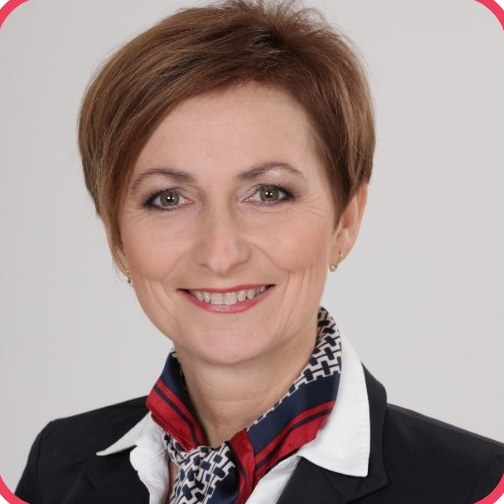
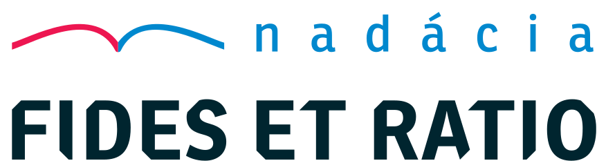

Mladým pravdu
Pravdivo, zrozumiteľne a s láskou o identite, vzťahoch a sexualite – pre mladých ľudí, ich rodičov, učiteľov a duchovných sprievodcov.
Mladí si dnes kladú otázky, kto sú, ako budovať vzťahy a čo so svojou sexualitou. Často pritom narážajú na povrchné či zavádzajúce odpovede. Projekt mladympravdu.sk im ponúka vedecky podložené, ľudsky pravdivé a taktné informácie, aby mohli dospievať k zdravej, stabilnej a zrelej osobnosti.
Patria k nemu dve knihy: Na rovinu, Gen Z priamo pre mladých a Mladým pravdu pre učiteľov, rodičov a sprievodcov.
Sexualita nie je centrom života. Dôležité sú osoby a vzťahy.
Na rovinu, Gen Z
Kniha priamo pre mladých – o sexualite, identite a vzťahoch, otvorene a v jazyku Generácie Z.
O knihe →Autor
Renáta Ocilková – pedagogička, publicistka a lektorka vzťahovej výchovy s prednáškami pre tisíce ľudí.
O autorke →Kríza identity
Pomoc rodinám a mladým, ktorí hľadajú odpoveď na otázku, čo definuje muža a ženu.
Viac →Učiteľom
Prednášky, články a postupy pre pedagógov, ktorí s mladými hovoria o citlivých témach.
Pre školy →
Na rovinu, Gen Z
Praktická a úprimná príručka pre mladých o témach, ktoré ich najviac zaujímajú – o sexualite, identite, vzťahoch a hľadaní zmyslu. Hovorí otvorene, bez vytáčok a v jazyku Generácie Z.
Je to prvá kniha svojho druhu pre generáciu Z na slovenskom trhu – otvára témy, o ktorých by mladí radi hovorili, ale možno majú ostych sa opýtať. Predkladá ich odborne a odovzdáva hodnoty, ktoré môžu byť dobrým kompasom v období dospievania.
Hovorí zrozumiteľne a bez zbytočného moralizovania a pomáha robiť rozhodnutia s rozvahou a sebaúctou.
- Sexualita
- Identita
- Hormonálne zmeny
- Vzťahy
- Hľadanie zmyslu
49 strán · brožovaná väzba · ISBN 978-80-8179-270-0
Renáta Ocilková predstavuje knihu Na rovinu, Gen Z
Mladým pravdu
Príručka pre učiteľov, rodičov a sprievodcov mladých. Pútavým, ľudsky pravdivým a pritom taktným až láskavým spôsobom podáva širokú a bohatú škálu informácií adresovaných mladým.
Sú to informácie nevyhnutné na to, aby mladí ľudia vedeli, ako v životnom spoločenstve muža a ženy dosiahnuť plný rozvoj duše, ducha i tela. Za 6 mesiacov sa kniha stala najpredávanejším titulom roka vo svojom vydavateľstve.
Kúpiť knihu160 strán · brožovaná väzba · ISBN 978-80-8179-229-8

Ohlasy na knihu
Príručka podáva veľmi pútavým, ľudsky pravdivým a pritom taktným až láskavým spôsobom širokú a bohatú škálu informácií adresovaných mladým.
…príručku môžu oceniť a využívať aj tí, ktorí hoci možno nezdieľajú kresťanskú vieru, ale predsa tiež majú v sebe vyváženú citlivosť na ľudskú dôstojnosť, na skutočné a trvalé dobro človeka, zvlášť mladej generácie.
Kniha obsahuje množstvo poznatkov a prehľadne spracovaných údajov k téme. Vďaka za tak potrebnú a s citom písanú prácu.
Na rovinu s Renátou Ocilkovou
Rozhovory s odborníkmi a hosťami o rodine, výchove, identite a vzťahoch. Podcast vydáva Nadácia Fides et Ratio.
Prečo rovnaká výchova nezaručuje rovnaký výsledok?
Hosť: Mgr. Mário Schwarz, PhD. (II. časť)
PaedDr. et Mgr. Renáta Ocilková
Pedagogička, publicistka a lektorka vzťahovej výchovy. Venuje sa vzdelávaniu v oblasti identity, intimity, sexuality, bioetiky a vzťahov. Viac ako 10 rokov prednáša a publikuje na témy výchova k manželstvu a rodičovstvu, identita ženy a muža a ľudské práva.
Po zdravotníckom vzdelaní vyštudovala Pedagogickú fakultu a Fakultu sociálnych a ekonomických vied Univerzity Komenského a Pedagogickú fakultu Katolíckej univerzity v Ružomberku; bola hosťujúcou študentkou Humboldtovej univerzity v Berlíne. Absolvovala stáž v Nemeckom Bundestagu a medzinárodné aj slovenské akreditované kurzy emocionálnej a vzťahovej výchovy a duchovného sprevádzania.
Sedem rokov bola členkou Výboru pre rodovú rovnosť pri Rade vlády SR, dnes je členkou Rady vlády pre rodinu a demografický vývoj a predsedníčkou Slovenskej spoločnosti pre rodinu. Je vydatá, s manželom Marekom majú tri deti.
Je autorkou kníh Na rovinu, Gen Z pre násťročných a Mladým pravdu pre učiteľov, rodičov a sprievodcov mladých.

O tom všetkom – citlivo, láskavo, pravdivo, na rovinu
Sex, potrat, pornografia… Témy, o ktorých sa s mladými treba rozprávať. Život je krásny – ži ho naplno.

Čo definuje muža a ženu?
Táto otázka je dnes veľmi aktuálna a mnohí mladí ľudia sa aktívne snažia pochopiť vlastnú identitu. Projekt Kríza identity muža a ženy spolu s odborníkmi skúma identitu človeka biblickou, biologickou a psychologickou optikou.
Za projektom stojí skupina organizácií a dobrovoľníkov, ktorí dlhodobo pracujú s mladými ľuďmi a rodinami – a hovoria aj o tom, ako môžu psychológovia, terapeuti a duchovní sprevádzať človeka v strachu, zmätku či úzkosti.
krizaidentity.sk
- prednášky na školách na tému Identita ženy a muža
- mesačné stretnutia rodičov, ktorých deti prežívajú krízu identity
- webináre, konferencie a užitočné dokumenty na stiahnutie
Pomoc učiteľom v citlivých témach
Sexualita, identita, prečo žiť cnostne, kto som, môžem byť niečo iné? Na otázky mladých potrebuje učiteľ porozumieť a vedieť na ne primerane reagovať.
Projekt Učiteľom prináša pedagógom, vychovávateľom aj rodičom dobré príklady z praxe zo zahraničia a stručný súhrn medicínskych, psychologických a pedagogických poznatkov – aby žiakom pomohli prejsť dospievaním a vyrásť na zdravé, stabilné a zrelé osobnosti.
ucitelom.sk
- odborné informácie pre učiteľov a rodičov
- videoprednášky odborníkov a vzorové prednášky
- svedectvá o vyrovnávaní sa s problémami orientácie a identity
- prednášky priamo na škole – pre žiakov, učiteľov aj rodičov
Darujte pravdu pod stromček
Knihy Renáty Ocilkovej – pre mladých aj pre tých, ktorí ich sprevádzajú.